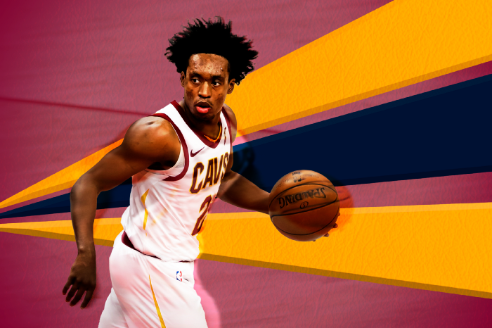

To extend or not to extend: Collin Sexton
Sean Carroll illustation
I once met a Cleveland fan in real life. That’s very strange for someone who lives in Melbourne, Australia.
Given I’m a Golden State Warriors fan and I’m sick of being asked it myself, I decided to be a pest and ask: “did you just jump on when LeBron came?”
“No, I’ve been following them since I was born,” she quickly chirped back.
I knew exactly how hasty those comebacks can be. My comeback to accusations of bandwagonism is a dart back of “I’ve been following since 2012 before Golden State beat Denver in the first round”.
She swiftly changed the topic with: “I love Sexton and Garland. It’s been great this season to see them both show how good they can be, Collin scoring and Darius as a traditional point guard.”
That’s not verbatim, I obviously don’t record conversations with people when I’m at parties. If I did, I certainly would’ve been too shocked to get out the voice memo app when I learned she was a living, breathing Cavs fan.
This was around mid-January 2021, after Australia was making its way out of COVID-19 lockdowns. I knew socialising after a year of Zoom calls was going to be strange, but again, a Cavs fan?
At the time, her Cleveland Cavaliers were seated right in the thick of the Eastern Conference playoff race. They were hovering around .500 for the first time since LeBron left.
Head coach JB Bickerstaff was playing a short rotation, letting much of the scoring load rest on the shoulders of his 22-year-old undersized two-guard in Sexton. And it was working.
Not long before this, Sexton had scored 42 points on 16–29 shooting against the Brooklyn Nets. He had led the Cavs to a win over a Nets roster that featured Kyrie Irving, Kevin Durant and James Harden.
The best part, as he nailed three after three, Sexton went back and forth with the most offensively stacked roster in NBA history, all while wearing Kyrie’s shoes and donning his former number two Cavs jersey.
“Collin Sexton brought us home tonight. And, again, people can say what they want to say about him, but there’s a small group of guys in this league who can do what he did tonight,” Bickerstaff said to the media after the game.
Cedi Osman chipped in too: “he was just on fire tonight. He was unconscious. He was out of his mind. He was making all the shots. It was beautiful to watch.”
Even Kyrie had nice things to say: “you gotta love NBA ball, though. I was smiling when Collin Sexton was making those shots.”
VICTORY SHOWER! #BeTheFight pic.twitter.com/1LDGidoE6v
— Cleveland Cavaliers (@cavs) January 21, 2021
It wasn’t too long ago that Sexton quotes were taking a different direction.
“It’s becoming increasingly clear that when you hear a Cavs veteran talk about younger players not knowing their role, or knowing how to win, or what to do on the court, they mean Sexton,” The Athletic’s Joe Vardon wrote.
“Throughout the organisation, the line on Sexton is that he does not ‘know how to play.’ He doesn’t know how to defend the pick-and-roll. He doesn’t know how to set up teammates as a point guard.”
Even just this season, after the gloss of the hot start had worn off, Sexton’s name was back in the media in a bad way. Vardon, The Athletic reported that various Cavs players still get frustrated by the way Sexton dominates the rock and opponents taunt them by saying “you know he’s not going to pass you the ball” in the middle of games.
If I were a mathematician, I’d look at the positive comments, I’d look at the negative comments and then say the average response to Collin’s time with the Cavs is somewhere in the middle. But is it?
Collin finished the season averaging 24.3 points and 4.4 assists while playing 35.3 minutes for the 22–50 Cavs.
His 29.6 usage percentage is one of the bigger numbers for a combo guard this season, and he shot 61 percent at the rim, 44 percent from the mid-range and 38 percent from three per Cleaning the Glass.
When Trae Young made his first All-Star Game with the Atlanta Hawks, they weren’t good, in fact, they were bad. A lot of people didn’t like the selection, saying how can you collect these accolades while putting up numbers on a sub-par team.
That season, the 2019–20 season, Trae was near the top of the league with 38.7 usage percentage, making 118.9 points per shot attempts, good for the 82nd percentile among all guards and his 42.4 assist percentage was the best for any guard per Cleaning the Glass.
He paired these high usage numbers by making 35 percent from behind the arc, 58 at the rim (53rd percentile) and a solid percentage from the mid-range/floater area.
When he was on the court (35.3 minutes), he made the Hawks 11.8 points better on offence, made his teammates more efficient and kept things ticking over. Defence, yeah, he struggled, but his overall difference when extrapolated across an average of 100 possessions was +8.4 using Cleaning the Glass’ metric.
When Sexton was on the court this season, the Cavs offence was 1.6 points better per 100 possessions and 2.3 points worse on defence.
With Collin on the court, his teammates shot fewer three-pointers and in the paint. Pair that with a lower effective field goal percentage and you’ve got a lottery martini, shaken not stirred.
It could be unfair of me to compare Sexton with Young, one’s a definite star who’s staking his claim as a superstar these playoffs. Not all players are made equal, there are so many variables playing into that success.
What they do share is a draft class, and with that, comes the same opportunity to sign an extension this offseason.
While Trae is a no-brainer, what do you do if you’re Koby Altman and the Cavaliers front office?
Do you offer this 22-year-old with 20-plus point averages next to his name a max? He’s clearly a talented scorer in the NBA. He was playing well early in the season before it combusted, but what if the early run was real?
If Altman offers him something less than his max, then he’ll be wondering why. He’s putting up the counting stats and has only gotten better with every season he’s been in the league. He might take this and add another chip to the many already on his shoulder, but what if he decides to take his qualifying offer next season, becoming an unrestricted free agent the year following?
The Ringer’s Bill Simmons recently spoke about the power of young players in today’s NBA on The Bill Simmons Podcast. He wondered if we’ll eventually see a young star use his leverage to get out of an undesirable situation.
The impetus for that discussion was rumblings about Zion Williamson’s perceived unhappiness with the New Orleans Pelicans. While Zion has established himself as a superstar and will definitely receive a max extension without hesitation, what if Simmons was right, just not about the super-duper-stars?
Lucky for us (and the longevity of this article), Koby Altman and co. have apparently made a decision about Sexton. The Cavs are exploring the trade market for Collin this offseason according to Jeremy Woo, Sports Illustrated: “there is a belief around the league that the Cavaliers would prefer to trade Sexton rather than extend him. The Cavaliers own the third-overall pick of the draft and could use it on a guard.”
Bringing down his value, any team receiving Sexton this offseason knows that his rookie deal only lasts one more season and he’ll have to be ‘properly paid’ after the 2021–22 season.
Good players on cost-controlled rookie deals are valuable to contenders. Look across the league and rookie deals are littered across contending rosters like Cam Johnson and Mikal Bridges on the Phoenix Suns, Donte Divincenzo on the Milwaukee Bucks and Jordan Poole on the Golden State Warriors.
Okay, maybe the last one was tongue-in-cheek, but elite teams usually have most of their salary tied up on their elite players, having to fill the roster out with cheaper deals. If there’s a contender out there looking for one more piece, one scoring guard to push them over the edge, it’ll be hard to build a team knowing Sexton will command a hefty extension.
It’s quite poetic that in LeBron James’ final season with the Cavs, the team didn’t move on from the Brooklyn Nets first-round draft pick they received in return for Kyrie Irving going to the Boston Celtics. There were rumours about Cleveland moving that pick for Paul George mid-season or another star to make a championship push.
They held onto the pick because it was a great starting point for a rebuild if LeBron were to pack up shop and sign with another team, the LA Lakers, for example.
Four years later and that Brooklyn Nets pick, now Collin Sexton, might not be part of that exact Cavs rebuild they held onto him for.